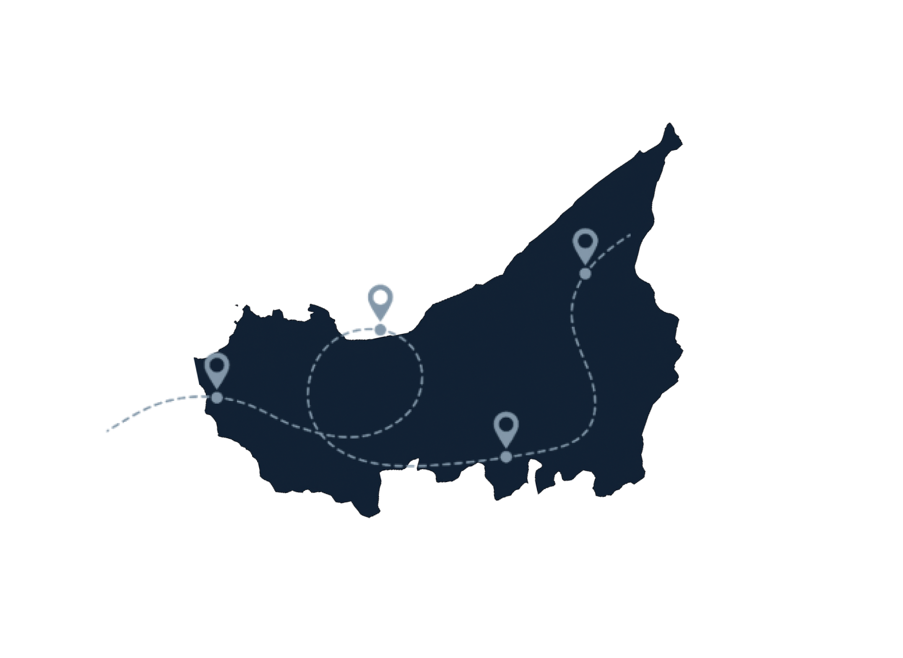
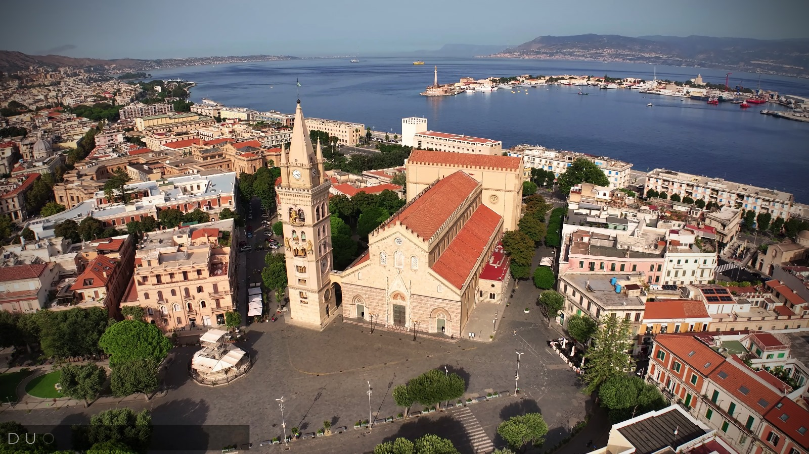
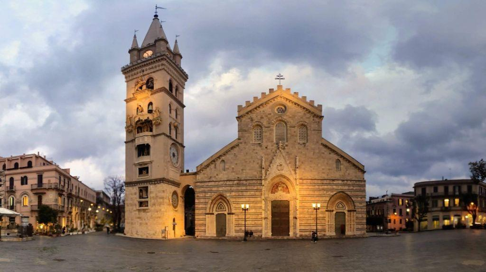

PIAZZA DUOMO
Messina
Piazza Duomo è il principale spazio monumentale della
città di Messina e rappresenta il cuore religioso, storico e
simbolico del centro urbano. Situata nel tessuto storico
della città, la piazza è dominata dalla presenza del
maestoso Duomo di Messina e del celebre campanile con
l’orologio astronomico, uno dei più complessi e
spettacolari del mondo.

L’elemento architettonico più importante della piazza è il Duomo di Messina, una delle chiese più significative della Sicilia. La cattedrale fu originariamente fondata nel XII secolo durante il regno normanno e nel corso dei secoli ha subito numerose trasformazioni dovute ai terremoti e agli incendi che hanno colpito la città.
L’edificio attuale presenta una facciata monumentale caratterizzata da tre portali decorati e da una grande finestra centrale. La struttura combina elementi romanici, gotici e barocchi, risultato delle varie fasi di ricostruzione che si sono succedute nel tempo. All’interno si conservano importanti opere d’arte, mosaici e decorazioni che testimoniano la lunga storia religiosa della città.

Accanto alla cattedrale si erge il campanile con l’Orologio Astronomico di Messina, inaugurato nel 1933. Questo straordinario meccanismo, progettato dall’ingegnere francese Frédéric Klinghammer, è considerato uno dei più grandi orologi astronomici al mondo. Ogni giorno, a mezzogiorno, le figure meccaniche si animano dando vita a uno spettacolo che rappresenta episodi della storia religiosa e civile della città.
Tra gli altri monumenti presenti nella piazza si trova la Fontana di Orione, una splendida fontana rinascimentale realizzata nel XVI secolo dall’artista Giovanni Angelo Montorsoli, allievo di Michelangelo. La fontana celebra il mito di Orione, leggendario fondatore della città, ed è considerata uno dei capolavori della scultura rinascimentale in Sicilia.
La storia di Piazza Duomo è strettamente legata alle vicende drammatiche che hanno segnato la città di Messina. La piazza ha subito infatti numerose trasformazioni nel corso dei secoli, a causa di terremoti, incendi e bombardamenti che hanno più volte modificato l’assetto urbano della città.
Uno degli eventi più tragici fu il devastante Terremoto di Messina del 1908, che colpì la città il 28 dicembre e causò la distruzione quasi totale del centro storico. Il terremoto, seguito da un violento maremoto, provocò decine di migliaia di vittime e rase al suolo gran parte degli edifici storici, compreso il Duomo e la piazza circostante.
Dopo la catastrofe, la città fu oggetto di un vasto progetto di ricostruzione urbanistica. Piazza Duomo venne riprogettata mantenendo la sua funzione simbolica e religiosa, ma con criteri più moderni e con edifici costruiti secondo nuove norme antisismiche. La ricostruzione cercò di rispettare il più possibile la memoria storica del luogo, ripristinando l’impianto della piazza e ricostruendo il Duomo seguendo il modello architettonico originario.
L’Orologio Astronomico di Messina è considerato uno dei più grandi e complessi orologi meccanici del mondo.
Ogni giorno a mezzogiorno il meccanismo dell’orologio mette in movimento statue dorate che rappresentano scene della storia di Messina
La Fontana di Orione è una delle fontane rinascimentali più importanti della Sicilia
Dal punto di vista urbanistico, Piazza Duomo rappresenta uno dei principali spazi pubblici di Messina. La piazza si sviluppa come un grande spazio aperto, progettato per valorizzare la monumentalità della cattedrale e dei palazzi circostanti.
Dopo la ricostruzione del Novecento, l’area è stata organizzata secondo criteri moderni, con ampi spazi pedonali che permettono di apprezzare la prospettiva architettonica degli edifici storici. Le strade principali della città convergono verso la piazza, rendendola un punto di passaggio e di incontro per cittadini e visitatori.


Piazza Municipio, Agrigento

Piazza Marina, Palermo

Piazza Duomo, Enna

Piazza Garibaldi, Caltanissetta

Piazza Garibaldi, Trapani